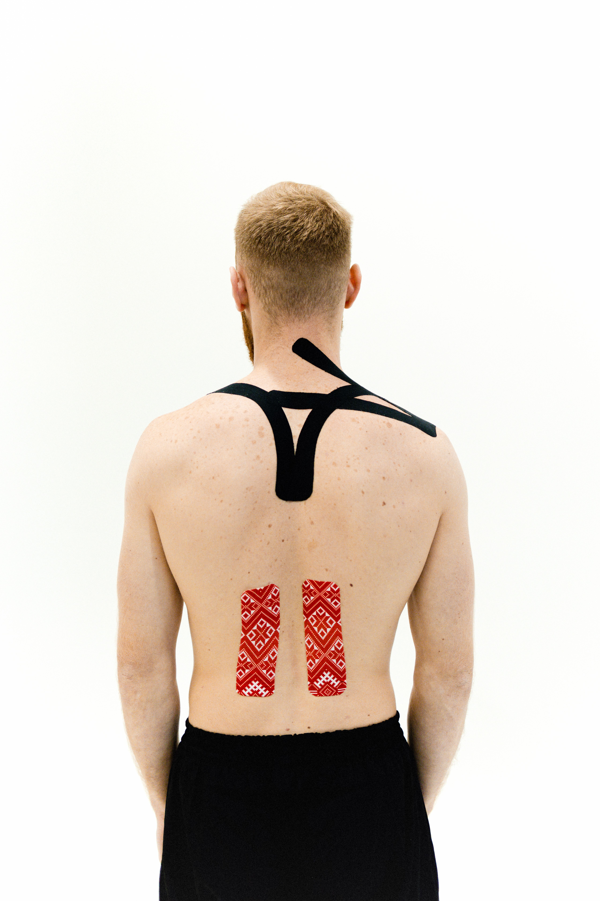

Uddybning
Der findes rigtig mange forskellige tilgange mod spændinger — fra den korte udstrækning indimellem til professionel behandling. Nedenstående overblik ordner de mest almindelige tiltag i kategorier og forklarer kort, hvad hvert af dem sigter mod. Ingen af punkterne her er et helbredelsesløfte: ved vedvarende eller kraftige gener giver det altid mening at få det undersøgt af en læge.

Går direkte til den forkortede eller overbelastede muskulatur og genskaber kortvarigt bevægelsesfrihed.
Strækker den sidelæns nakkemuskulatur, som ofte forkortes af ensidig hovedholdning foran skærmen.
Mobiliserer skulderleddene og aktiverer muskulaturen mellem skulderbladene, som næsten ikke bruges, når man sidder.
Strækker den forreste brystmuskulatur, som forkortes ved fremadtrukne skuldre, og modvirker dermed den typiske rundryggede holdning.
Bevæger rygsøjlen skiftevis i bøjning og strækning og skal på den måde løsne rygmuskulaturen.
Korte nakke-/skulderbevægelser, der kan indbygges indimellem uden at forlade pladsen — netop den tilgang, som PostureShift understøtter med sine påmindelser.
Kombinerer udstrækning, styrkelse og bevidst vejrtrækning og dækker dermed flere angrebspunkter samtidig.
Fremmer blodgennemstrømningen i muskulaturen og opleves af mange som mærkbart afslappende.
Enkel varmekilde, der kan bruges målrettet lokalt på nakke, skulder eller nederste ryg.
Giver mere vedvarende, regulerbar varme — praktisk til længere brug om aftenen.
Virker på hele kroppen og kan med fordel kombineres med udstrækningsøvelser bagefter.
Ligner effekten af et varmt bad, men med en ekstra generel afspændende virkning gennem skiftet mellem varme og afkøling.
Afgiver jævn, lavt doseret varme direkte på det berørte sted i flere timer ad gangen — også under tøjet i hverdagen.
Udøver målrettet tryk på spændte muskelpartier, uden at der er brug for en anden person.
Udøver via kroppens egen vægt et fladedækkende tryk på muskler og fascier, f.eks. langs ryggen.
Giver mere punktvist tryk end en faciarulle — velegnet til mindre, svært tilgængelige steder som mellem skulderbladene.
Skaber hurtige, pulserende trykstød mod muskulaturen og bruges ofte til kortvarig løsning før eller efter belastning.
Mange små trykpunkter fordelt over en større flade, som regel til at ligge på med ryggen i nogle minutter.
Målrettet, vedvarende tryk på enkelte, ofte smertefulde muskelknuder — som regel med en bold eller fingrene.
Elektrisk muskelstimulering via hudelektroder, som af nogle opleves som smertelindrende og afslappende.
Bruger faglig viden og teknikker, som ikke kan udføres — eller kun i begrænset omfang — på egen hånd.
Kombinerer målrettede øvelser, manuelle teknikker og rådgivning, tilpasset den enkelte gene.
Løsner spændt muskulatur med målrettede manuelle greb og fremmer den lokale blodgennemstrømning.
Helhedsorienteret manuel tilgang, der ser bevægelsesindskrænkninger i hele kroppen som en mulig årsag til spændinger.
Fokuserer på bevægeligheden i rygsøjlen og de tilstødende led.
Sætter fine nåle på bestemte punkter på kroppen, forankret i traditionel kinesisk medicin.
Skaber med undertryksglas et lokalt sug på huden, som menes at stimulere blodgennemstrømningen i vævet nedenunder.
Giver mening ved vedvarende, tilbagevendende eller kraftige gener, for at udelukke andre årsager og finde den rette behandling.
Effektiviteten og evidensgrundlaget er til dels meget forskellige fra metode til metode — nogle af de nævnte metoder er videnskabeligt godt undersøgt, andre anses i dele af fagmiljøet for at være omstridte. Denne liste beskriver kun, hvad hver metode sigter mod, og vurderer ikke dens effektivitet.
Går til roden af problemet i stedet for at behandle symptomerne bagefter.
Gør det muligt at skifte mellem at sidde og stå og dermed variere belastningsmønstrene hen over dagen.
Understøtter rygsøjlens naturlige krumning og reducerer ensidig belastning, når man sidder.
Undgår en vedvarende fremad- eller nedadbøjet hovedholdning, som belaster nakkemuskulaturen.
Reducerer ensidig belastning af håndled, underarm og skulder ved langvarigt skærmarbejde.
Aflaster nakke og øvre ryg, når de er indstillet korrekt — mere om det på siden Aflastning af armene.
Spændinger har ofte ikke kun en fysisk, men også en psykisk komponent — stress hænger ofte sammen med forhøjet muskelspænding.
Skifter bevidst mellem at spænde og afspænde enkelte muskelgrupper for at udvikle en fornemmelse for grundspænding.
Rolig, bevidst vejrtrækning virker afslappende via nervesystemet og kan løsne ubevidst optrukne skuldre.
Fremmer opmærksomheden på spænding i kroppen, ofte en forudsætning for overhovedet at kunne løsne den bevidst.
Selvafspændingsteknik med indre gentagne formler, der skal fremkalde muskelafspænding og ro.
Går til roden af forhøjet grundspænding i stedet for kun at behandle den muskulære følge.
Rammebetingelser, der skaber grundlaget for færre spændinger i hverdagen.
God søvn understøtter musklernes restitution; en passende pude undgår yderligere fejlholdning af nakken om natten.
Tilstrækkeligt væskeindtag nævnes ofte som en grundforudsætning for normal muskelfunktion.
Diskuteres ofte i sammenhæng med muskelfunktion; ved mistanke om mangel er det bedre at få det undersøgt af en læge eller ernæringsfaglig end at gætte på egen hånd.
Forebygger ensidig, vedvarende belastning fra starten i stedet for at behandle opstået spænding bagefter — kernetilgangen i PostureShift.